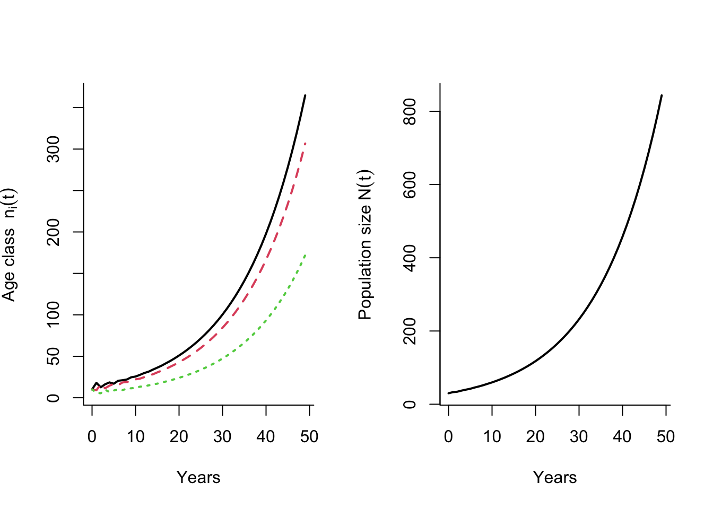

3 Age-structured matrix population models
Learning goals
Define a projection matrix for age- or stage-structured populations.
Explain the main differences between a pre- and post-reproductive census.
Draw a life cycle graph and explain how it is related to the projection matrix.
Calculate asymptotic parameters from a matrix model (using projection or eigen analysis), and explain their biological meaning.
Calculate sensitivities of \(\lambda\) with respect to projection matrix elements, and explain their meaning and some applications.
Do an LTRE analysis for a structured population in two different environments.
3.1 Why matrix models?
Matrix models make it possible to work with systems of multiple equations simultaneously. For instance, if we study a long-lived species with 50 age classes, it becomes very cumbersome to write down the growth equations for each of the 50 age classes separately. With a matrix model we need only one equation to keep track of all of the stages simultaneously.
The main ‘ingredient’ of an age-structured matrix model is the Leslie matrix, which contains all the information necessary to project the growth of each age class over time. Several life history parameters can also be calculated directly from this matrix, including the long-term population growth rate \(\lambda\).
3.2 Age-structured growth and the Leslie matrix
First we will look at the equations of growth for each of the age class, from one time step to the next. We always denote the first class as class 1, the second as class 2, etc., but as we will see in section 3.3, the definition of the parameters depend on census time (when the population is counted within each time step). To keep track of the number of individuals in each of the age classes over time, we define the following population vector \(\mathbf{n}_t\) of individuals in age class 1 to \(k\):
\[\begin{align} \mathbf{n}_t=\left[\begin{matrix} n_1(t) \\ n_2(t)\\ \vdots \\ n_k(t) \end{matrix} \right]. \tag{3.1} \end{align}\]
The population size at time \(t\) is then \(N_t=\sum_{j=1}^kn_j(t)\) (note that we now use \(j\) or \(i\) as index instead of \(x\), following conventional notation for matrix models). Let \(s_j\) describe the survival probability of individuals in age class \(j\) to the next time step, and \(f_j\) the number of offspring produced by each individual in age class \(j\) that enters age class 1 at time \(t+1\). Importantly, \(s_j\) and \(f_j\) of the Leslie matrix are not the same as the age-specific survival probability \(p_j\) and fecundity \(m_j\) (see section 3.3).
Then, the equation for age class 1 is given by
\[\begin{equation} n_1(t+1)=f_1n_1(t)+f_2n_2(t)+\ldots +f_kn_k(t), \tag{3.2} \end{equation}\]
while the equations for the other age classes are given by
\[\begin{align} \begin{split} n_2(t+1)&=s_1n_1(t),\\ n_3(t+1)&=s_2n_2(t),\\ \vdots \\ n_k(t+1)&=s_{k-1}n_{k-1}(t).\\ \end{split} \tag{3.3} \end{align}\]
Together, the equations for growth of the age classes constitutes a system of linear equations, which we can summarize with a matrix model:
\[\begin{align} \begin{split} \mathbf{n}_{t+1}&=\mathbf{A}\mathbf{n}_t\\ \left[\begin{matrix} n_1 \\n_2 \\ \vdots \\ \\ n_k \\ \end{matrix}\right]_{t+1}&=\left[\begin{matrix} f_1 & f_2 && \cdots & f_k \\ s_1 &0 && \cdots &0\\ 0 &s_2 & &\cdots &0\\ \vdots& &\ddots&&\vdots\\ 0 &\cdots&0 & s_{k-1} &0 \\ \end{matrix}\right]\left[\begin{matrix} n_1 \\n_2 \\ \vdots \\ \\ n_k \\ \end{matrix}\right]_{t}. \end{split} \tag{3.4} \end{align}\]
This is the age-structured version of the exponential growth model of an unstructured population (section 2). The matrix \(\mathbf{A}\) is a square matrix (having the same number of rows and columns), of dimension \(k \times k\) (where \(k\) is the number of age classes). It is named a Leslie matrix after the work of Leslie (1945, 1948). The elements along the first row represent the production of offspring to next year’s population from each of the age classes, and these terms are often called fertility coefficients, while the survival coefficients are located along the sub-diagonal. In the last age class no one will survive until next time step, but they can reproduce and contribute with a number \(f_k\) to next year’s age class 1.
The Leslie matrix can be decomposed as the sum of a survival matrix \(\mathbf{U}\) and a fertility matrix \(\mathbf{F}\):
\[\begin{align} \begin{split} \mathbf{A}&=\mathbf{U}+\mathbf{F}\\ \left[\begin{matrix} f_1 & f_2 && \cdots & f_k \\ s_1 &0 && \cdots &0\\ 0 &s_2 & &\cdots &0\\ \vdots& &\ddots&&\vdots\\ 0 &\cdots&0 & s_{k-1} &0 \\ \end{matrix}\right] &= \left[\begin{matrix} 0 & 0 && \cdots & 0 \\ s_1 &0 && \cdots &0\\ 0 &s_2 & &\cdots &0\\ \vdots& &\ddots&&\vdots\\ 0 &\cdots&0 & s_{k-1} &0 \\ \end{matrix}\right] \left[\begin{matrix} f_1 & f_2 && \cdots & f_k \\0 &0 && \cdots &0\\ 0 &0 & &\cdots &0\\ \vdots& &\ddots&&\vdots\\ 0 &\cdots&0 & 0 &0 \\ \end{matrix} \right] \end{split} \tag{3.5} \end{align}\]
These sub-matrices are used to calculate net reproductive rate \(R_0\) and generation time \(G\) for a given Leslie matrix.
3.2.1 Creating a Leslie matrix in R
The following R function creates a Leslie matrix from vectors of survival \(\mathbf{s}\) and fertility \(\mathbf{f}\) (they must have the same length, corresponding to the number of age classes). The final element of the survival vector should be 0 if the model is purely age-structured (otherwise, individuals are allowed to accumulate in the final class, which is a common extension of age structured models).
leslie.matrix <- function(Svec, Fvec){
n <- length(Svec)
MatA<- matrix(0,n,n)
MatA[1,] <- Fvec
for(i in 1:(n-1)){
MatA[i+1,i] <- Svec[i]
}
MatA[n,n] <- Svec[n]
MatA
}3.3 Pre- and post-reproductive census
The Leslie matrix depends on coefficients of fertility, \(f_j\), and survival probability \(s_j\). However, these coefficients depend on the census type of the model, i.e. at what time point the population is counted during each time interval. For a birth-pulse population (reproducing once per year), there are two main census types: Pre- and post-reproductive census. As the names indicate, they assume that the population is counted either right before (pre) or right after (post) reproduction.
The reason why census time is important is that a lot can happen to the population also within a time interval. The age-specific parameters describing fecundity (\(m_x\)) and survival (\(l_x\), \(p_x\)) as a function of actual age \(x\) are the same regardless of census time. But the fertility and survival coefficients of the Leslie matrix (\(s_j\), \(f_j\)) will be different - see definitions below.
In general, the size of age class 1 is always larger in the post-reproductive census than with pre-reproductive, because individuals in this class are newborn. For any age-structured population with positive growth rate, the stable age structure (proportion of individuals of each age) will always decline with age. The relative proportion of age class 2 and 3 also changes with census time.
We assume that the population reproduces only once per year. But different species can have very different modes of reproduction, depending on their life history and environments. Some tropical species can reproduce at all times through the year. Bacteria also reproduce (divide) continuously. Other species can have more than one reproductive events each season, or reproduce only every other season (or even more rarely). It is possible to account for these different types of reproductive mode in a matrix model (Caswell 2001), but that requires a different way to estimate the age-specific survival and fertility coefficients, which is beyond the scope of this course.
Below we go through the parameters of a pre- and post-reproductive census in more detail, using the bird example.
3.3.1 Pre-reproductive census
Figure 3.1: Overview of the timing of different events of survival and reproduction within each time step, for a pre-reproductive census.
With a pre-reproductive census, offspring will be nearly 1 year old when counted, and age classes correspond to the actual age at counting (e.g. individuals in age class 1 are 1 year old when counted), so that \(s_j=p_j\). The fertility coefficients are then given by \(f_j=p_0m_j\), the product of the fecundity \(m_j\) and the first year survival probability \(p_0\). Using the bird example, the Leslie matrix for a pre-reproductive census is given by
\[\begin{align} \begin{split} \mathbf{A}=\left[\begin{matrix} f_1 & f_2 &f_3 \\ s_1 &0&0\\ 0 & s_2 &0 \\ \end{matrix}\right]=\left[\begin{matrix} 0 & p_0m_2 &p_0m_3 \\ p_1 &0&0\\ 0 & p_2 &0 \\ \end{matrix}\right]=\left[\begin{matrix} 0 &0.6 &1.2 \\ 0.9 &0&0\\ 0 & 0.6 &0 \\ \end{matrix}\right]. \end{split} \tag{3.6} \end{align}\]
In R, we get
leslie.bird.pre <- leslie.matrix(Svec <- c(.9, .6, 0), Fvec= c(0, .6, 1.2)) 3.3.2 Post-reproductive census
Figure 3.2: Overview of the timing of different events of survival and reproduction within each time step, for a post-reproductive census.
With a post-reproductive census, the population is counted right after reproduction. In this case, age class 1 consists of newborn individuals (age 0), and individuals in age class \(j\) have the actual age \(j-1\), so that \(s_j=p_{j-1}\). The fertility coefficient \(f_j\) now depends on survival of the parent from last time step \(s_{j-1}\), and on fecundity \(m_{j}\) of the age \(j\), since individuals reproduce right before next census. Thus, the fertility coefficient of the Leslie matrix is now \(f_j=p_{j-1}m_{j}\). This definition of fertilities can be counter-intuitive, as the contribution from a given age class \(j\) to next year’s offspring depends on survival from the previous age \(p_{j-1}\). This may be one of the reasons why many studies using a post-reproductive census have errors in the fertility coefficients in the Leslie matrix (Kendall et al. 2019).
For the bird example, we get the following Leslie matrix with post-reproductive census:
\[\begin{align} \begin{split} \mathbf{A}=\left[\begin{matrix} f_1 & f_2 &f_3 \\ s_1 &0&0\\ 0 & s_2 &0 \\ \end{matrix}\right]=\left[\begin{matrix} 0 & p_1m_2 &p_2m_3 \\ p_0 &0&0\\ 0 & p_1 &0 \\ \end{matrix}\right]=\left[\begin{matrix} 0 &2.7 &3.6 \\ 0.2 &0&0\\ 0 & 0.9 &0 \\ \end{matrix}\right]. \end{split} \tag{3.7} \end{align}\]
In R, we get
leslie.bird.post <- leslie.matrix(Svec <- c(.2, .9, 0), Fvec= c(0, 2.7, 3.6)) 3.3.3 Avoiding mistakes when constructing matrix models
Mistakes in constructing the Leslie matrix are quite common in the literature (Kendall et al. 2019), and are often due to issues with census time. Mistakes are easily made, since keeping track of age classes, actual age, and timing of events within each time step requires accurate ‘bookkeeping’. Mistakes are more common for post-reproductive census models than pre-reproductive census models (Kendall et al. 2019). The names used for the different coefficients are also not consistent in the literature, for instance our ‘fertility coefficient’ \(f_j\) is by some authors referred to as ‘fecundity’ (\(m_j\) in our notation). Finally, there is no general consensus on whether to use 0 or 1 as index for the first age class when a post-reproductive census is used (we always use 1 as the index, regardless of census time), and this choice can affect the limits and indexing in different calculations (e.g. the Euler-Lotka equation).
The only recommendation to avoid such errors when constructing a matrix model, is to take your time and make sure you understand each element and its biological meaning. One way to double check that you have obtained right coefficients is to compare a pre- and post-reproductive census model and Leslie matrix, and check that \(\lambda\) is the same for the two cases. If it differs, at least one of the models has an error. Another useful tool is to draw a life cycle graph (see section 3.4).
We get the same value for the population growth rate \(\lambda\) regardless of census time, but all other results, including the net reproductive rate \(R_0\) and generation time \(T_C\), will generally differ. The difference can be big, in particular for species producing a large number of offspring per reproductive event. A female cod, for instance, can produce millions of eggs, but only a few survive the first year. If we count a cod population right after spawning (post-reproductive census), the fertilized eggs would constitute a very high proportion of the population. If we instead counted the population right before spawning (pre-reproductive census), the number of age 1 offspring would be much lower.
3.4 Life cycle graph
Figure 3.3: Life cycle graph for the songbird example, with a pre-reproductive census.
A structured model can be represented in different ways. You have already seen two: The life table and the matrix model. A third representation, which is a helpful visual tool, is the life cycle graph.This is particularly useful for more complex structures than age structure, but can also be helpful when constructing age structured models, in particular to keep track of parameters for different census time.
A life cycle graph gives an overview of the possible transitions among age classes each year. For age structured populations, these transitions are quite simple, as they only consist of of survival from one age class to the next, and reproductive contributions from each age class to next year’s offspring. The figure above shows the life cycle graph for the songbird example, with a pre-reproductive census. The first step to make such a graph is to draw a circle for each age class, in this case from 1 to 3. These circles are then connected by arrows representing transitions. The survival of offspring during the first year is included in the reproductive transitions, because of the pre-reproductive census. Comparing the life cycle graph to the Leslie matrix described before, we see that they both describe the same process of change in age classes from one time step to the next.
3.5 Asymptotic properties
The simplest application of a matrix model is to use it to project the growth of each age class over time, from some given initial population vector \(\mathbf{n}_0\) to a desired number of time steps \(T_{max}\). For a given Leslie matrix \(\mathbf{A}\), the following R function performs such a projection, and returns the number of individuals in each age class at each time step:
leslie.projection <- function(MatA, Tmax = 50, n0=c(10,10,10)){
Nmat = matrix(NA, nrow=length(n0), ncol=Tmax)
Nmat[,1] = n0
for(i in 2:Tmax){
Nmat[,i] = MatA%*%Nmat[,i-1]
}
Nmat
}
#For the bird example:
Pop.bird <- leslie.projection(MatA=leslie.bird.pre) #Matrix of rojected growth of each age class overtime
Total.pop.bird <- apply(Pop.bird,2,sum) #Vector of total population size over time
#Plot of each age class, and the total population size over time:
years <- 0:(length(Total.pop.bird)-1) #Get time steps from 0 to Tmax (for plotting)
par(mfrow=c(1,2),bty="l")
matplot(years, t(Pop.bird), type="l",bty="l", lwd=2, xlab="Years", ylab=expression(paste("Age class ", n[i](t))))
plot(years,Total.pop.bird, type="l",bty="l", lwd=2, xlab="Years", ylab=expression(paste("Population size ", N(t)))) 
The function returns a matrix where the number of columns correspond to \(T_{max}\), and the number of rows corresponds to \(k\) (number of age classes). Each column represents the population vector at the corresponding time point. In R, the operator \(\%*\%\) means matrix multiplication, which is done for each time step within a for-loop to calculate the current population vector as a function of the previous one. Note that the default initial population given in the function arguments is \(\mathbf{n}_0=[10, 10, 10]\), these numbers can be changed when you call the function (you can change the length of \(\mathbf{n}_0\), but then the matrix \(\mathbf{A}\) should changed accordingly to have the same dimensions. The function also includes the initial population in the returned matrix (the first column). Note that for the bird example, the results of the calculation are stored in a matrix Pop.bird where each row corresponds to one age class, and each column represents a time point. To get a vector of population size in each time step, Total.pop.bird, the above code uses the function apply() to sum up each columns of the matrix. To plot the growth of each age class we use the function matplot(), which lets us plot all rows (or columns) of a matrix with one function call.
Try some different starting values for each age class and look at what happens to the projected growth, keeping a rather low value for \(T_{max}\). Note the fluctuations in the beginning, that become smoother over time and eventually disappear. These are transient fluctuations, meaning that they are temporary. After the time where these fluctuations have become negligible, the population has reached the phase of stable growth, where it grows exponentially with a constant rate \(\lambda\). In this situation the population shows asymptotic dynamics (the behavior at the limit where the transient fluctuations are gone). There are three properties of the population growth in this case that are of particular relevance: The long-term growth rate \(\lambda\), the stable age structure \(\mathbf{u}\), and the reproductive values \(\mathbf{v}\). The next section below describes how to calculate these properties from the projected population sizes (over a sufficiently long time interval), where the different properties and their biological meaning are discussed in more detail. This is followed by a section showing how to calculate them directly from the Leslie matrix (the most efficient, but perhaps less intuitive way).
3.5.1 Calculations based on projected growth
From the population projections we can now estimate three important quantities (using R), as shown below.
Long-term population growth rate:
This is the same growth rate \(\lambda\) that we have already defined using the Euler-Lotka equation. This parameter can also be estimated from projected population size over time, as \(\lambda=N_{T+1}/N_T\), after a sufficiently large number of time steps \(T\) (large enough that the estimate of \(\lambda\), to a chosen number of decimal places, does not change if we increase \(T\) further).
For the bird example we can use the following R code:
Tmax <- length(Total.pop.bird)#Get max time
lambda.bird <- Total.pop.bird[Tmax]/Total.pop.bird[Tmax-1]The estimated value from projection over 50 time steps is \(\lambda\approx\) 1.07.
Stable age structure:
The age structure is the proportion of the population constituted by each age class. As you can see from the projected growth, this will also fluctuate in the beginning, before it approaches a stable age structure as the transient fluctuations fade out, where the proportions become constant. The stable age structure is denoted by a vector \(\mathbf{u}=[u_1, u_2, ..., u_k]\) (where \(\sum_{j=1}^{k} u_j=1\)). This vector can be estimated from the projected population, as \(u_j\approx n_{j,T}/N_T\), where again \(T\) is a (sufficiently) large number of time steps. For growing age structured populations, the age distribution will always be a monotonically decreasing function of age.
In R, we can also estimate the stable structure from the projections, here shown for the bird example:
stable.structure.bird <- Pop.bird[,Tmax]/Total.pop.bird[Tmax]The estimated stable age structure from projection over 50 time steps is \(\mathbf{u}=\) [0.432, 0.364, 0.204].
Reproductive values:
Third, we can calculate the age-specific reproductive values, using a slightly modified version of the projection. The reproductive value was first defined by Fisher (1930) who was interested in how much individuals of each age class would contribute to the future population, compared to other age classes. We can think of the reproductive value as a return rate associated with ‘investing’ in different age classes. If could choose individuals from just one age class to start a new population, and wanted this population to be as large as possible after a given number of years - we should choose the age class with the highest reproductive value.
To calculate the reproductive values from projections, we have two options: One is to do the projection \(k\) times (corresponding to the number of age classes), and each time start with the same number of individuals in a different age class. The relative differences in population size after \(T\) time steps reflect the reproductive values. The vector \(\mathbf{v}\) (a row vector) can be scaled in different ways, here we will use the scaling \(\mathbf{vu}=\sum_{j=1}^kv_ju_j=1\).
The other approach is to use the transposed Leslie matrix \(\mathbf{A}^T\) (taking the transpose means flipping the matrix \(\mathbf{A}\) over the diagonal, so that rows and columns are switched) and do the same kind of calculation as for the stable age structure before applying the scaling defined above. In R, this method gives us:
Pop.bird.transpose <- leslie.projection(MatA=t(leslie.bird.pre)) #Matrix of projected growth using the transpose Leslie matrix.
repvalues.bird <- Pop.bird.transpose[,Tmax]/sum(stable.structure.bird*Pop.bird.transpose[,Tmax])The estimated reproductive values from projection over 50 time steps are \(\mathbf{v}=\) [0.914, 1.087, 1.025].
Note that the reproductive value of an age class only makes sense as a relative measure (compared to the other classes), and that the reproductive value of any given age class depends on properties of other age classes too. For instance, if environmental change alters the survival and fecundity in one age class, this will generally affect the reproductive value of all age classes.
3.5.2 Calculations using eigen analysis
You have now seen how the Leslie matrix \(\mathbf{A}\) (or its transpose) can be used to project the population over time, and how we could calculate \(\lambda\), \(\mathbf{u}\) and \(\mathbf{v}\) based on these projections. This method of estimation works well and is perfectly fine for a given model, such as the bird example, but it does take some time and is not the most elegant way. Sometimes we need to quickly calculate these parameters for multiple species, and then it would be rather cumbersome do projections for each one (although it could be solved with a for-loop). A much more efficient way, however, is to find these properties directly from the projection matrix \(\mathbf{A}\), using the eigenvalues and eigenvectors.
The mathematical details of these calculations are outside the scope of this course (see e.g. Caswell (2001) for a more detailed introduction), but they are routinely included in R packages and easily defined in custom functions as well. In short, given that certain properties of \(\mathbf{A}\) are fulfilled, \(\lambda\) is the dominant eigenvalue of \(\mathbf{A}\), \(\mathbf{u}\) is the right eigenvector associated with \(\lambda\), and \(\mathbf{v}\) is the left eigenvector. Although the mathematical details are outside our scope, it is also worth noting that for age-structured populations, the socalled characteristic equation of the matrix \(\mathbf{A}\), from which we all of these parameters are calculated, is actually the Euler-Lotka equation we defined above.
The following R function takes a Leslie matrix (or any other kind of projection matrix) as the input variable, and returns the value of \(\lambda\) along with the vectors \(\mathbf{u}\) and \(\mathbf{v}\), using the scaling defined above.
uvlambda <- function(MatA){
ev <- eigen(MatA)
tev <- eigen(t(MatA))
lmax <- which.max(Re(ev$values))
U <- ev$vectors
V <- tev$vectors
u <- as.matrix(abs(Re(U[, lmax]))/sum(abs(Re(U[, lmax]))))
u <- u/(sum(u)) #scale u
v <- as.matrix(abs(Re(V[, lmax])))
v <- v/sum(u*v ) #scale v
v <- t(ifelse(u*v <= 0, 0, v))
return(list("lambda"=max(Re(ev$values)),"u"=u,"v"=v))
}
uvlambda.bird <- uvlambda(leslie.bird.pre)
lambda.bird2 <- uvlambda.bird$lambda
stable.structure.bird2 <- uvlambda.bird$u
repvalues.bird2 <- uvlambda.bird$vThe calculated long-term growth rate is \(\lambda=\) [1.07] , the stable age structure is \(\mathbf{u}=\) [0.432, 0.364, 0.204], and the reproductive values are \(\mathbf{v}=\) [0.914, 1.087, 1.025]. These are the same results as from the projected growth.
3.5.3 Net reproductive rate and generation time
Using the submatrices \(\mathbf{U}\) (survival matrix) and \(\mathbf{F}\) (fertility matrix), we can calculate the net reproductive rate \(R_0\) and another measure of generation time.
To find \(R_0\) we first calculate the ‘generation to generation projection matrix’
\[\begin{align} \mathbf{R}=\mathbf{F}(\mathbf{I}-\mathbf{U})^{-1}, \tag{3.8} \end{align}\] where \(\mathbf{I}\) is an identity matrix (a matrix with 1’s on the main diagonal and 0’s everywhere else) of the same dimension as \(\mathbf{F}\) and \(\mathbf{U}\). The matrix \(\mathbf{R}\) describes the generation to generation growth of each age class. The column sums of \(\mathbf{R}\) represent the expected remaining lifetime reproduction of the age class (with age structure, only the first row elements will be non-zero - but in cases with more than one kind of offspring the matrix becomes more complex). \(R_0\) is the dominant eigenvalue of the matrix \(\mathbf{R}\), just like \(\lambda\) is the dominant eigenvalue of \(\mathbf{A}\) (remember that \(R_0\) is the population growth rate per generation).
In R, we can use the following function to calculate \(R_0\) and the column sums of the fundamental matrix, given the survival and fertility matrix. This code uses the bird example, with a pre-reproductive census:
R0function <- function(MatU, MatF){
n <- dim(MatU)[[1]]
Rmat <- MatF%*%solve(diag(1,n,n)-MatU)
Rvec <- apply(Rmat,2,sum)
R0 <- uvlambda(MatA=Rmat)$lam
return(list("R0"= R0,"Rvec"= Rvec))
}
Ubird <- Fbird <- leslie.bird.pre
Ubird[1,] <- 0
Fbird[2,] <- 0
Fbird[3,] <- 0
R0.Bird <- R0function(MatU=Ubird, MatF=Fbird)For the bird example, \(R_0\) is 1.19 and the column sums (remaining lifetime reproduction of each class) are 1.19, 1.32, 1.2.
We can also calculate a measure of generation time from the Leslie matrix and the fertility matrix, using the formula
\[\begin{align} G=\frac{\lambda}{\mathbf{v}\mathbf{F}\mathbf{u}}. \tag{3.9} \end{align}\] This measure assumes stable population growth, and is the expected age of mothers under this assumption. In R, we can use the following function:
GenTime <- function(MatA, MatF){
res <- uvlambda(MatA=MatA)
lam <- res$lam
u <- res$u
v <- res$v
lam/(v%*%MatF%*%u)
}
GenTimeBird <- GenTime(MatA=leslie.bird.pre, MatF=Fbird)For the bird example (pre-reproductive census), the generation time is 2.53 years.
3.6 Sensitivity analysis of \(\lambda\)
We will now turn to another important concept, namely the sensitivities of \(\lambda\) with respect to elements of the Leslie matrix. These sensitivities define the selection gradients on age-specific survival and fertility, reflecting the strength of selection on different parts of the life cycle.
The sensitivity of \(\lambda\) to a projection matrix element \(a_{ij}\) (here \(i\) refers to row and \(j\) refers to column of \(\mathbf{A}\)) is given by the partial derivative
\[\begin{align*} \frac{\partial \lambda}{\partial a_{ij}}=v_{i}u_{j}. \end{align*}\]
The matrix multiplication \(\mathbf{(uv)^T}\) (where \(\mathbf{u}\) is a column vector and \(\mathbf{v}\) is a row vector, and “T” denotes the transpose) returns the sensitivity matrix, i.e. a matrix where each element \(i,j\) corresponds to the sensitivity \(v_{i}u_{j}\). The following R code does this calculation for a given Leslie matrix \(\mathbf{A}\), by first finding the stable age structure and reproductive values (using our previous code), and then calculating the sensitivities:
sensitivity.matrix <- function(MatA, zeroes=T){
res <- uvlambda(MatA=MatA)
sensmat <- t(res$u%*%res$v)
if (zeroes==T){
sensmat <- ifelse (MatA==0, 0, sensmat)
}
sensmat
}
sens.mat.bird <- sensitivity.matrix(MatA=leslie.bird.pre)
round(sens.mat.bird,3)## [,1] [,2] [,3]
## [1,] 0.00 0.333 0.186
## [2,] 0.47 0.000 0.000
## [3,] 0.00 0.373 0.000With the default argument zeroes=T, all sensitivity elements corresponding to elements of \(\mathbf{A}\) that are zero are also set to zero. If we instead set zeroes=F, the function would return a sensitivity value for each element of the Leslie matrix, including the zero elements representing for instance transitions from age 2 to age 5 which are clearly not realistic within one time step We are usually only interested in the biologically realistic transitions, therefore it is common to set other sensitivities to zero (but whether or not this is done, it has no effect on the calculated sensitivities for the realistic transitions).
For the songbird example, we see that the highest sensitivities are found for the fertility coefficients (but: remember that this fertility parameter includes survival during the first year as well as fecundity). Overall, the sensitivities decline with age, suggesting that mutations that have an effect in early life are more likely to be favored by selection than those having an effect in late life, which is a well known result in the evolutionary theory of ageing (Hamilton 1966).
3.6.1 Elasticities
A closely related concept to sensitivity is the elasticity. The elasticity of \(\lambda\) to a projection matrix element \(a_{ij}\) is defined as the proportional change in \(\lambda\) to a proportional change in the matrix element, and is given by
\[\begin{align*} \frac{\partial \ln \lambda}{\partial \ln a_{ij}} =\frac{a_{ij}}{\lambda}\frac{\partial \lambda}{\partial a_{ij}}=\frac{a_{ij}}{\lambda} v_{i}u_{j}. \end{align*}\]
3.7 Life table response experiments
Sometimes we want to compare larger differences in \(\lambda\) (or some other response) between two or more different conditions - for instance for populations living in different environments, or populations that have experienced different management treatments. The purpose of a life table response experiment (LTRE) is to understand how different vital rates have contributed to an observed change in fitness. Caswell (2001), who introduced this method, describes it in more detail. The LTRE analysis is inspired from experimental approaches and analysis of variance (ANOVA), but does not require any actual experiments to take place. The ‘experiment’ can also be for instance a change in the projection matrix after a sudden environmental change or a management decision.
In an LTRE we first define a reference matrix \(\mathbf{A}^{(r)}\), defining the reference life history with growth rate \(\lambda^{(r)}\). Now assume that we want to compare this to another matrix \(\mathbf{A}^{(m)}\) for the same species, where the vital rates are different e.g. because of some environmental impact. This matrix is called a treatment matrix and has a corresponding \(\lambda^{(m)}\). We want to understand how much of the difference between \(\lambda^{(m)}-\lambda^{(r)}\) is coming from each vital rate. To do this, we first define two useful matrices (Caswell 2001):
\(\mathbf{A}^*=(\mathbf{A}^{(m)}+\mathbf{A}^{(r)})/2\) describes the matrix with each element halfway between the treatment matrix and the reference matrix.
\(\mathbf{D}=\mathbf{A}^{(m)}-\mathbf{A}^{(r)}\) is the matrix of differences in each element.
Now we can write the new \(\lambda^{(m)}\) as a function of \(\lambda^{(r)}\) plus a sum of contributions from each vital rate (Caswell 2001):
\[\lambda^{(m)}\approx \lambda^{(r)}+\sum_{i,j}d_{ij}\left.\frac{\partial\lambda}{\partial a_{ij}}\right|_{\mathbf{A}^*},\]
where the sensitivities are calculated for the matrix \(\mathbf{A}^*\). A common output of such an analysis is to plot these contributions side by side. Doing a life table response analysis for \(\lambda\) involves the following steps:
Define all the relevant projection matrices for each treatment / environment and define a reference matrix, and calculate \(\lambda\) for each.
Calculate \(\mathbf{A}^*\) and \(\mathbf{D}\),
Calculate the sensitivity matrix corresponding to the matrix \(\mathbf{A}^*\),
Calculate the contributions from each vital rate to the difference in \(\lambda\) according to the sum defined above.
3.8 Senescence
The sensitivities of \(\lambda\) with respect to age-specific survival and fertilities are important because (among other things) they measure selection pressures. More generally, a selection gradient of a trait (survival probability and fertility are also traits) is defined as the slope of fitness as a function of the trait. For a trait with value \(\theta\), the selection gradient is the partial derivative:
\[\begin{align} \text{Gradient}=\frac{\partial \text{Fitness}}{\partial \theta}. \end{align}\] If the trait is a vector, such as the vector of age-specific survival probability \(s_j\), the gradient is also a vector.
Based on the Euler-Lotka equation, Hamilton (1966) derived the selection gradient of \(r\) on (log) age-specific survival probability \(p_j\):
\[\begin{align} \frac{\partial r}{\partial \ln p_i}&=\frac{\sum_{j=i}^ke^{-rj}l_jm_j}{T_C}, \end{align}\] where \(T_C\) is the cohort generation time as defined above. The selection gradient on age-specific fecundity \(m_j\) is given by
\[\begin{align} \frac{\partial r}{\partial m_j}&=\frac{e^{-rj}l_j}{T_C}. \end{align}\] The selection gradient on survival will always decrease with age \(j\) (after age at first reproduction). For fecundity the selection gradient will usually decrease with age, but there is an exception for declining populations, if \(r\) is sufficiently negative relative to survival probability so that the stable age distribution increases with age. This situation (strongly declining populations) is unlikely to be persist for time periods long enough to affect evolution of life history traits.
Because the selection gradients (nearly) always decline with age, Hamilton (1966) concluded that senescence is inevitable for any conceivable organism. With his selection gradients, Hamilton formalized the arguments previously given regarding mutation accumulation hypothesis Medawar (1952), and the antagonistic pleiotropy hypothesis Williams (1957). Any change in the environment that causes the selection gradients to fall off more rapidly with age should select for increased senescence, while changes that make the slope less steep should select for reduced senescence.
The effect of extrinsic mortality on senescence
Williams (1957) suggested that increased extrinsic mortality could be such a factor leading to steeper gradients, and that simply living in a more risky environment (e.g. with many predators) should select for more rapid senescence. This may seem intuitive, however other researchers have shown that if the extrinsic mortality is age-independent, it has no effect on the slope of the selection gradient and thus no effect on senescence (Hamilton 1966; Caswell 2007; Wensink, Caswell, and Baudisch 2017). The reason is that extra mortality will affect not only the the survivorship \(l_x\), but also parameters that depend on it such as \(r\) and the stable age structure. It turns out that when the added mortality is age-independent, effects cancel each other out in the numerator and denominator of Hamilton’s selection gradient, so that there is no effect on senescence. If the extrinsic mortality is age-dependent, however (for instance if only younger individuals are exposed to increased predation), the selection gradients and senescence will also be affected. In general (and all else being equal), increased mortality in early life will then select for reduced senescence, while increased mortality in late life selects for increased senescence.
An associated common misconception is that senescence occurs ‘because few individuals survive to old age’, and that old-age individuals are therefore evolutionarily unimportant. This argument ignores the role of reproduction: Patterns of senescence cannot be described by declines in survivorship with age alone (the \(l_x\) curve; see section ??), because life histories are shaped by both survival and reproduction. Think of the life history of a large tree species: Only few individuals survive from seedling to old age, yet senescence is hardly present in many of these species. Even in the hypothetical situation of a species with no mortality at all (a flat \(l_x\)-curve), the selection gradients would still decline with age, because of reproduction leading to ever-increasing numbers of newborn individuals compared to older ages.
3.8.1 Exercises
Exercise 4.1
Start with the complete life table you calculated in Problem 3.2.
What is the difference between a pre-and post-reproductive census? Draw a life cycle graph for this population (on paper or using a drawing program), assuming a pre-reproductive census.
Calculate the vector of age-specific fertilities \(f_x\) for a pre-reproductive census.
Write down the Leslie matrix for this model, using the code from section 3.2.1.
Use the Leslie matrix to project the growth in each age class over 30 time steps, with the R function
leslie.projectiondefined above.Estimate \(\lambda\), the stable age structure \(\mathbf{u}\) and the reproductive values \(\mathbf{v}\) using 1) the projected population growth as described in section 3.5.1, and 2) from eigen analysis as described in section 3.5.2. Do you get the same values?
Estimate the stable age structure \(\mathbf{u}\) using 1) the projected population growth as described in section 3.5.1, and 2) from eigen analysis as described in section 3.5.2. Is the stable structure monotonically declining with age for all age classes? If not, can you explain why not?
Estimate the reproductive value vector \(\mathbf{v}\) using 1) the method from section 3.5.1, and 2) from eigen analysis as described in section 3.5.2. Which age class has the highest value? What does this mean?
Calculate the sensitivity matrix for the population, and plot the sensitivity of \(\lambda\) with respect to the fertilities and survival coefficients of the Leslie matrix. What do they mean biologically?
Assume that you could increase reproduction by multiplying the entire vector of annual fecundities \(m_x\) by some constant factor \(c_m\). How large should \(c_m\) be to achieve a long-term growth rate \(\lambda\) above 1? Plot the resulting stable structure and reproductive values for the model with these updated fertilities values - how have they changed compared to the baseline population?
Do the same exercise as the previous point, but increasing the annual survival \(p_x\) instead of \(m_x\). Is the resulting survival probability vector biologically realistic? Why/why not?
Assume you could multiply the \(p_x\) vector with some factor \(c_p\), but keep the maximum value of each survival probability to 1. How large would the value of \(c_p\) have to be to get a value of \(\lambda>1\)? (hint: use the
ifelse()function in R).